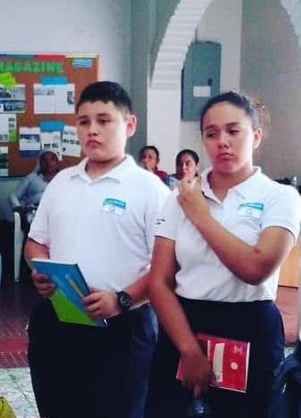
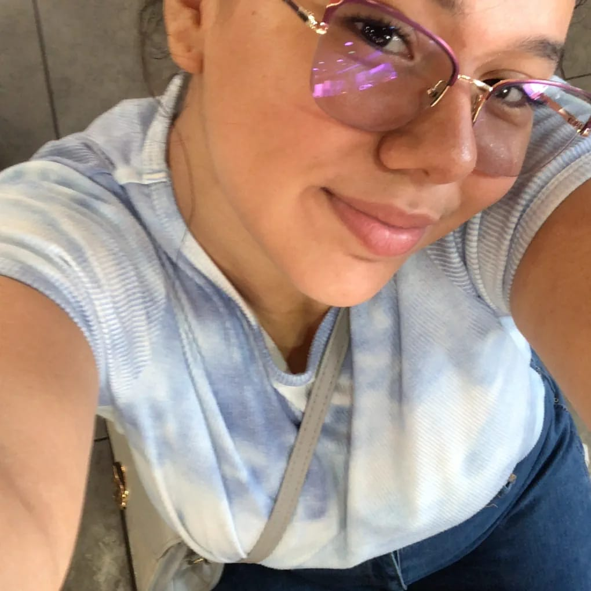
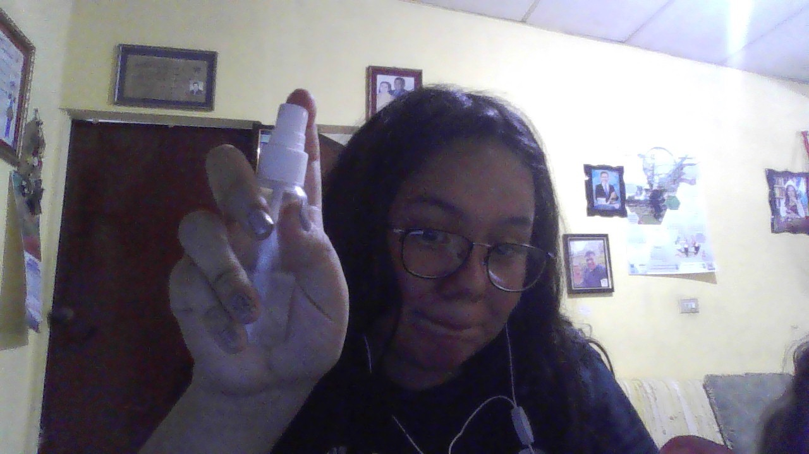
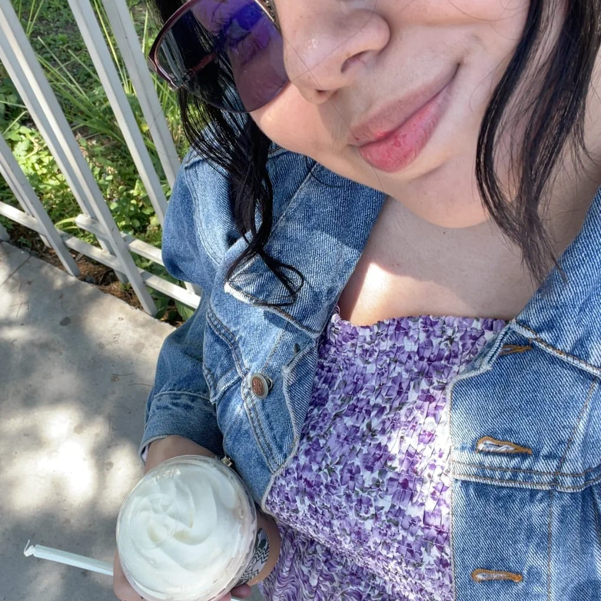
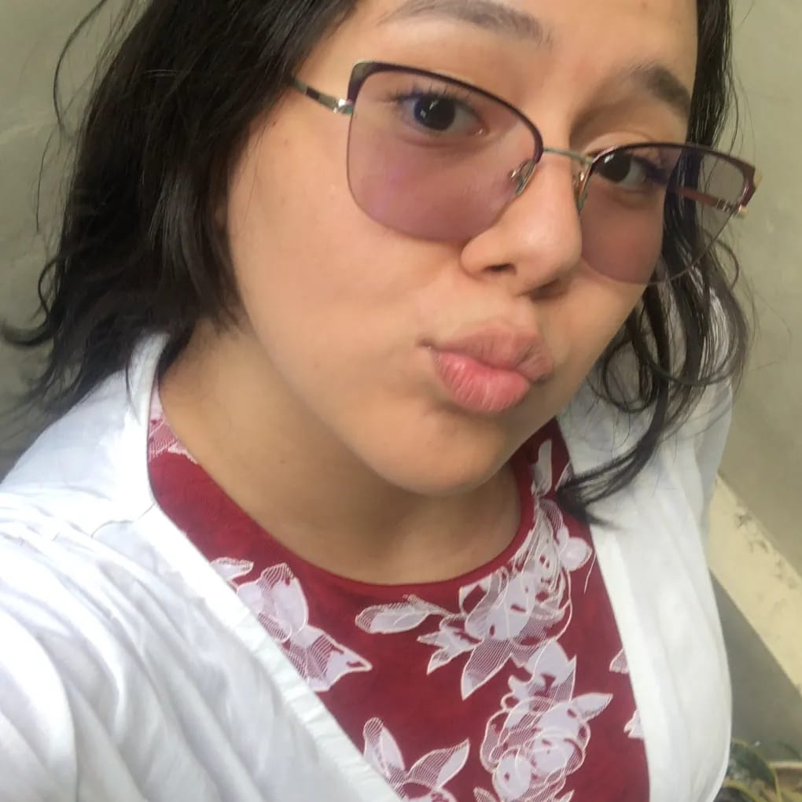
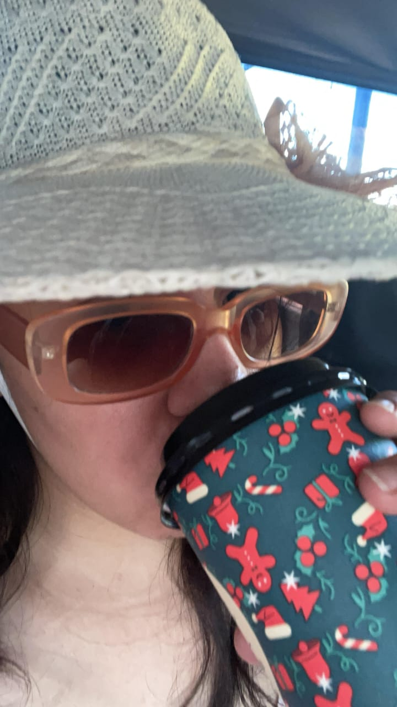
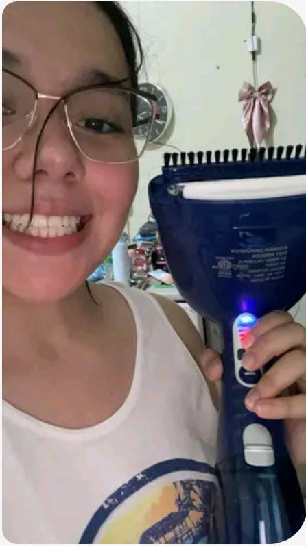
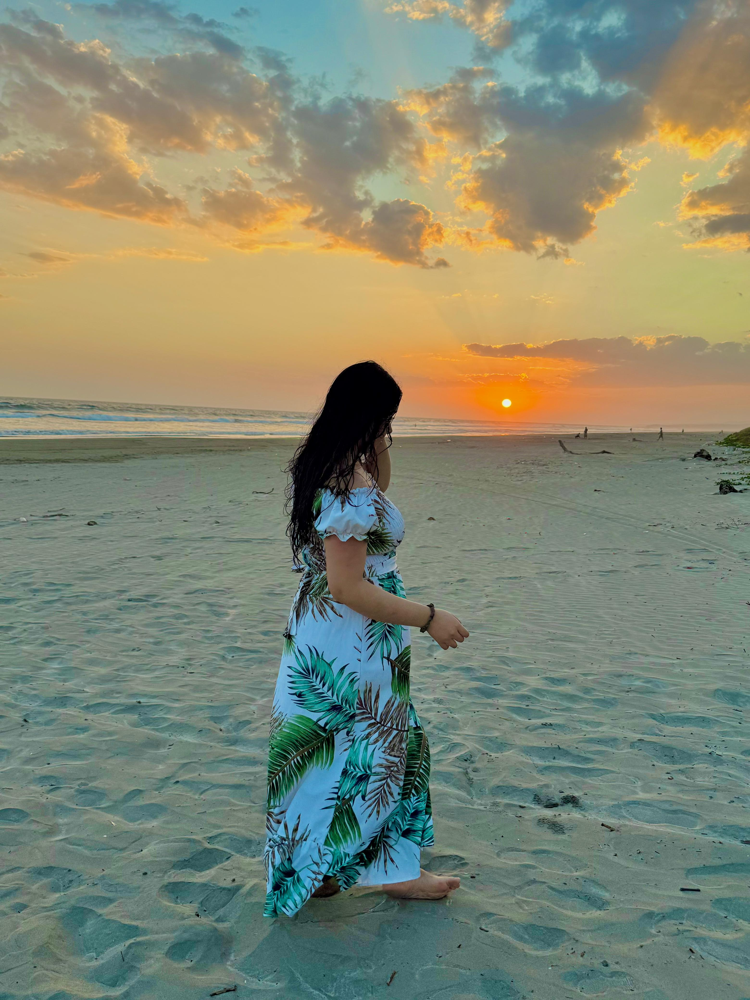
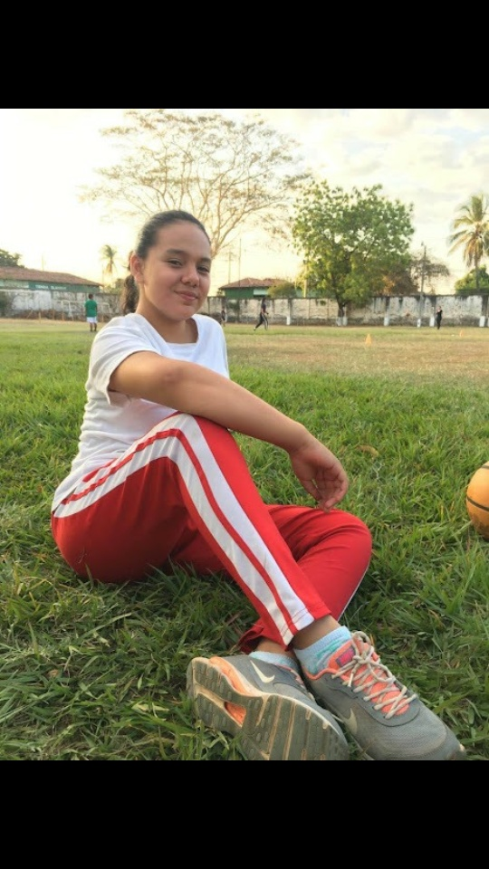

Nuestro primer recuerdo, ese mensaje inesperado una mañana cualquiera, el cual ignoré por cierto jajajaja

Gracias a ese recuerdo tuyo, se fue formando la amistad en la que poco a poco me fui ganando tu confianza.

Confianza la cual hasta el día de hoy conservo y aprecio. Pero sobre todo, me alegra poder ser ese confidente de todas tus hazañas jaja.

Sin imaginar, ya hasta nos maldecíamos como si nada, como un típico lunes en la mañana jaja, pero gracias a ello se formó la hermandad de hoy en día.

Y gracias a todos estos años me he dado cuenta de la gran persona y la mujer en la que te has convertido. Y recuerda: sé que puedes sola, pero no estás sola ^_^

Te pido perdón si en algún momento o en alguna situación mis acciones te han hecho sentir mal, mis intenciones como tu amigo siempre serán comprenderte y ayudarte en todo lo que se pueda.

Si algún día piensas que nadie te entiende, voltea, que yo siempre haré lo posible por escucharte y entenderte.

A veces nos olvidamos de agradecer a las personas que hacen que nuestras vidas sean mejores, cada consejo, cada sonrisa y detalle, así que gracias por ser tú.

Y recuerda siempre la gran persona que eres, eres lista, eres importante. Nunca cambies, tienes un gran corazón y eso te hace diferente. Y recuerda siempre: aquí tienes un amigo que está orgulloso de todo lo que hagas. TKM.

Y por mucho que crezcas, por mucho que madures, sin importar tantos problemas o decisiones que tomes en tu vida, yo siempre te recordaré así, como la niña que eres, la que siempre llevas dentro y la cual fue la primera versión que conocí de ti. Que cumplas muchos años más ❤️